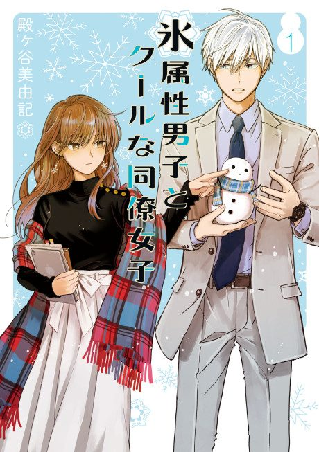

The Ice Guy and His Cool Female Colleague
氷属性男子とクールな同僚女子
After the anime, read the manga from Chapter 41.
7.2AniList score
—Animeter, no votes yet
12episodes
Anime finished. Where does the manga pick up?
Start at Chapter41
The anime ends on chapter 40, so start at chapter 41 (the first chapter of volume 6). The manga is still running.
140ongoing
Season 1Start reading here